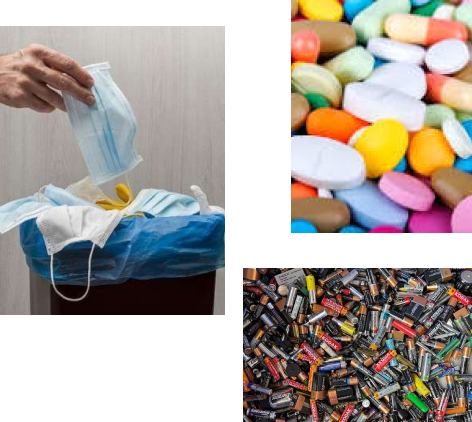

Sampah harus dipilah dan dikelola sesuai dengan jenisnya agar tidak merusak lingkungan. Sampah terbagi menjadi tiga yaitu Sampah B3 (Bahan Berbahaya dan Beracun), Sampah organik, dan Sampah Anorganik. Sampah harus dipilah dan dikelola sesuai dengan jenisnya agar tidak merusak lingkungan. Sampah terbagi menjadi tiga yaitu Sampah B3 (Bahan Berbahaya dan Beracun), Sampah organik, dan Sampah Anorganik
| Sampah B3 adalah jenis sampah yang mengandung bahan kimia atau zat-zat berbahaya yang dapat menimbulkan dampak negatif terhadap kesehatan manusia dan lingkungan jika tidak dibuang dengan benar. Contoh sampah B3 adalah baterai, limbah elektronik seperti komputer tua, lampu neon bekas, serta limbah medis seperti jarum suntik, perban bekas, dan obat-obatan kadaluarsa. | Pembuangan sampah B3 harus dilakukan dengan hati-hati. Identifikasi sampah terlebih dahulu lalu buang sesuai regulasi. Misalnya baterai bekas dapat dikumpulkan dahulu lalu diserahkan ke tempat pengepul limbah elektronik. |  |
|---|